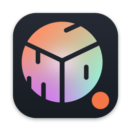

CmdQ
Queue up Claude Code tasks across your projects and let them run on their own. Anything stopped by a usage limit picks up again when the limit resets.
Requires macOS 12 or later and the Claude Code CLI, installed and logged in. CmdQ runs the official CLI and never calls Claude on its own.
Your Claude Code work keeps moving when you're not at the keyboard.
Claude Code's own extensions, such as hooks and plugins, work inside a running session. Restarting a session that stopped at a limit, ordering work across projects, and showing remaining usage and progress in the menu bar all happen outside the session. That is the part CmdQ handles. It works alongside those extensions and doesn't replace them.
Already installed the Claude Code CLI and logged in? Skip to step 2.
Use one of the first three commands and check that claude --version prints a version number. Then run claude once and log in with your Claude account. Without a login, queued tasks don't run and usage isn't shown.
curl -fsSL https://claude.ai/install.sh | bashbrew install --cask claude-codenpm install -g @anthropic-ai/claude-codeclaude --versionclaudeMove CmdQ from the DMG to Applications and open it. On first launch you'll see this notice. Nothing runs until you click Agree and start.
Queued tasks run Claude Code with --dangerously-skip-permissions. Claude Code will read, write, and delete files and run commands in the target folder without asking you first. Review what you queue, keep your work under version control, and use this app only on folders you are willing to let it change. You are responsible for the results of the tasks you run.
Click + Folder to open a project tab and type a command.
Enter adds it to To Do, and ⌘Enter adds it to the auto queue.
Type / to pick one of your skills.
The auto queue runs from the top down: one task at a time per project, up to three projects at once by default. To Do holds work that never runs on its own until you promote it.
Path starts a new session in a project folder. Session continues an existing conversation. Interactive opens a terminal where you talk to Claude directly.
Drag a task under another to chain it. The child runs in the parent's session after the parent finishes, and doesn't run if the parent fails.
Running tasks and terminals switch to Waiting for reset and continue in the same session when the limit resets. An interactive terminal opened without a task resumes as a background terminal. The weekly limit works the same way.
| Status | Meaning | What happens next |
|---|---|---|
| Queued | Waiting its turn | Starts when the task ahead of it in the same path finishes |
| Running | Claude Code is working on it | Changes to Done or Failed |
| Waiting for reset | Paused at the usage limit (not a failure) | Continues in the same session after the reset |
| Done | Finished normally | Its chained children run next |
| Failed | Ended with an error | Its chained children don't run |
The window header and the menu bar icon show 5-hour window and Weekly limit usage and the time to Next reset. Closing the window keeps CmdQ running in the menu bar. Choose Quit from the menu to stop it.
On the icon, a red dot means unread notifications, yellow means a task is waiting for the reset, and green means something is running.
Drag a task to change its order, or drag it to the right to chain it under the task above. Hover over any card button to see its name.
| Button | What it does |
|---|---|
| ▶ | Run now, promote a To Do task to the auto queue, or re-run a failed task |
| ⏸ | Stop the run and move the task back to To Do |
| 💬 | View the response |
| ⌘ | Run interactively in the app's terminal |
| ☆ | Add the session to bookmarks |
| 🗑 | Delete the task right away, along with its chained children |
Attach files, links, and notes with the 📎 button or by dropping files on the window. Attachments belong to a session and every command in it can use them.
Put [첨부] (the marker is Korean in every language) in a command to pass them to claude when it runs, or type # in the command box to pick specific ones.
When a task needs back-and-forth, click ⌘ on a card or choose Interactive as the target to open a terminal in the app.
Run in background keeps it going after you close it, and ⇧⌘T lists the terminals still running.
You get a notification when a terminal is waiting for input.
Click the session label in the terminal header to copy its resume command.
Click ☆ to pin a session you want to return to, and open the list with ⇧⌘B.
A bookmark stays after you delete the original task, so you can reopen the session in a terminal at any time.
Open Settings with ⌘,. These are the ones you're most likely to change. Other settings are described on the Settings screen.
| Setting | Description |
|---|---|
| Language | Follow System · 한국어 · English |
| Theme | Dark (default) · Light |
| Terminal window width | Default (up to 1000px) · Full width |
| Desktop notifications | Notifies you when a task finishes, hits a limit, fails, or waits for input |
| claude executable | If empty, CmdQ looks for ~/.local/bin/claude, then searches PATH |
| Auto-queue concurrent runs | How many projects the auto queue runs at once. Default 3 |
| Concurrent runs per path | Automatic plus manual runs in one project. Default 2. Use 1 if your tasks edit files |
| Start at login | Opens CmdQ when you log in so the auto queue keeps going |
| Action | Default |
|---|---|
| Add project | ⌘O |
| Close current tab | ⌘W |
| Activate left tab · Activate right tab | ⌥⌘← · ⌥⌘→ |
| Select path · Select session · Select interactive | ⌃1 · ⌃2 · ⌃3 |
| Show all | ⇧⌘A |
| Settings | ⌘, |
| Bookmarks | ⇧⌘B |
| Terminals | ⇧⌘T |
You can reassign these in the Shortcuts group in Settings.
| Symptom | Fix |
|---|---|
| CmdQ says it can't find the CLI | Run which claude in Terminal and enter that path in claude executable in Settings |
A command can't find a tool such as node | Quit CmdQ and add the tool's folder to claude.extra_paths in ~/Library/Application Support/com.doitasap.cmdq/config.toml |
| A task is stuck at “Waiting · the session is in use” | Another terminal or task is using that session. Close it or wait for it to finish |
| Session history shows Session file not found | Claude Code deletes old sessions after its retention period (30 days by default). Use View the response to read CmdQ's log |
| macOS says the app is “damaged” or can't verify the developer | Release builds are signed and notarized. Download the app again from GitHub Releases |
| The interactive terminal goes blank | Press ⇧⌘D to save a diagnostic file and attach it to an issue. It contains terminal output, so review it before sharing |
To comply with Anthropic's third-party policy, this section describes how CmdQ works.
statusLine in ~/.claude/settings.json to a wrapper that reads usage (your existing statusline display stays; Later leaves the file alone)Everything stays in ~/Library/Application Support/com.doitasap.cmdq/. Nothing is sent off your Mac or shared with third parties. See the Privacy Policy (Korean) for details.
macOS 12 or later. For Windows or Linux support, let us know in a GitHub issue.